主从复制 #
1 概述 #
- 主从复制是指将一台 Redis 服务器的数据复制到其他的 Redis 服务器，前者称为主节点（Master），后者称为从节点（Slave）。
- 数据的复制是单向的，只能由主节点到从节点。
- 主从复制的作用主要包括：
- 数据冗余：
- 主从复制实现了数据的热备份，是持久化之外的一种数据冗余方式。
- 故障恢复：
- 当主节点出现问题时，可以由从节点提供服务，实现快速的故障恢复，实际上是一种服务的冗余。
- 负载均衡：
- 在主从复制的基础上，配合读写分离，可以由主节点提供写服务，由从节点提供读服务，分担服务器负载，尤其在写少读多的场景下，通过多个从节点分担读负载，可以大大提高 Redis 服务器的并发量。
- 高可用：
- 除了上述作用外，主从复制还是哨兵和集群能够实施的基础，因此说主从复制是 Redis 高可用的基础。
- 数据冗余：
2 实现 #
2.1 旧版复制功能 #
2.1.1 实现 #
- Redis 的复制功能分为同步（Sync）和命令传播（Command Propagate）两个操作：
- 同步操作用于将从服务器的数据库状态更新至主服务器当前所处的数据库状态。
- 命令传播操作则用于在主服务器的数据库状态被修改，导致主从服务器的数据库状态出现不一致时，让主从服务器的数据库重新回到一致状态。
2.1.1.1 同步 #
- 当客户端向从服务器发送
SLAVEOF命令，要求从服务器复制主服务器时，从服务器首先需要执行同步操作，也即是，将从服务器的数据库状态更新至主服务器当前所处的数据库状态。 - 从服务器对主服务器的同步操作需要通过向主服务器发送
SYNC命令来完成，其主要步骤如下：

2.1.1.2 命令传播 #
- 在同步操作执行完毕后，主从服务器两者的数据库将达到一致状态，但这种一致并不是一成不变的，每当主服务器执行客户端发送的写命令时，主服务器的数据库就有可能会被修改，并导致主从服务器状态不再一致。
- 具体的实例如下：
-
假设一个主服务器和一个从服务器刚刚完成同步操作，他们的数据库都保存了相同的五个键 $k_1$ 至 $k_5$。

-
如果这时，客户端向主服务器发送命令
DEL k3，那么主服务器在执行完这个DEL命令之后，主从服务器的数据库将出现不一致，主服务器的数据库已经不再包含键 $k_3$，但这个键却仍然包含在从服务器的数据库里面。
-
为了让主从服务器再次回到一致状态，主服务器需要对从服务器执行命令传播操作，主服务器会将自己执行的写命令，也即是造成主从服务器不一致的那条写命令，发送给从服务器执行，当从服务器执行了相同的写命令之后，主从服务器将再次回到一致状态。
-
在上面的例子中，主服务器因为执行了命令
DEL k3而导致主从服务器不一致，所以主服务器将向从服务器发送相同的命令DEl k3，当从服务器执行完这个命令之后，主从服务器将再次回到一致状态，现在主从服务器两者的数据库都不再包含键 $k_3$ 了。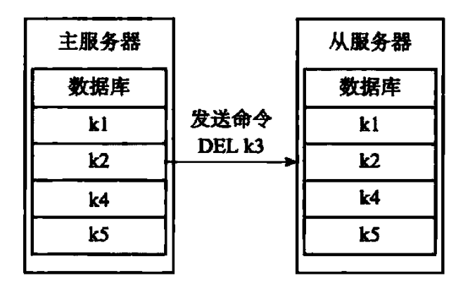
-
2.1.2 缺陷 #
-
在 Redis 中，从服务器对主服务器的复制可以分为以下两种情况：
- 初次复制：
- 从服务器以前没有复制过任何主服务器，或者从服务器当前要复制的主服务器和上一次复制的主服务器不同。
- 断线后重复制：
- 处于命令传播阶段的主从服务器因为网络原因而中断了复制，但从服务器通过自动重连接重新连上了主服务器，并继续复制主服务器。
- 初次复制：
-
对于初次复制来说，旧版复制功能能够很好地完成任务，但对于断线后重复制来说， 旧版复制功能虽然也能让主从服务器重新回到一致状态，但效率却非常低，具体实例如下：
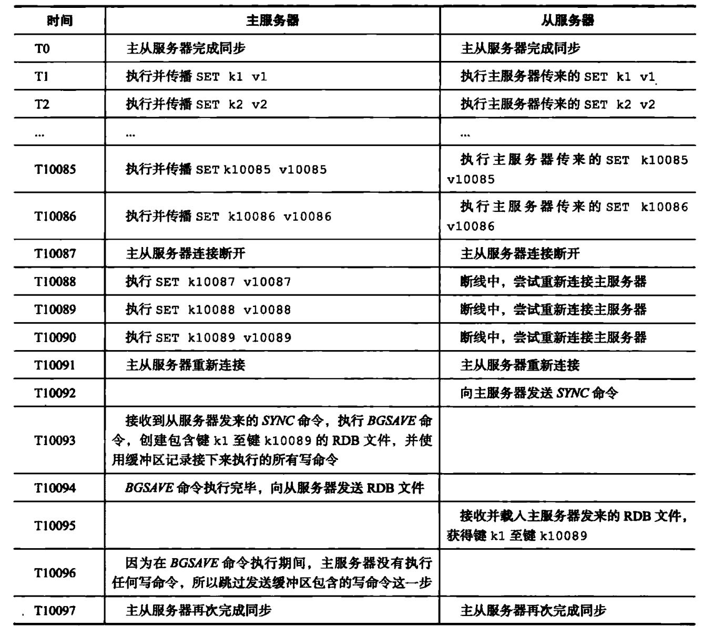
- 在时间 T10091，从服务器终于重新连接上主服务器，因为这时主从服务器的状态已经不再一致，所以从服务器将向主服务器发送
SYNC命令，而主服务器会将包含键 $k_1$ 至键 $k_{10089}$ 的 RDB 文件发送给从服务器，从服务器通过接收和载入这个 RDB 文件来将自己的数据库更新至主服务器数据库当前所处的状态。 - 虽然再次发送
SYNC命令可以让主从服务器重新回到一致状态，但如果我们仔细研究这个断线重复制过程，就会发现传送 RDB 文件这一步实际上并不是非做不可的：- 主从服务器在时间 T0 至时间 T10086 中一直处于一致状态，这两个服务器保存的数据大部分是相同的。
- 从服务器向要将自己更新至主服务器当前所处的状态，真正需要的是主从服务器连接中断期间，主服务器新添加的 $k_{10087}$、$k_{10088}$、$k_{10089}$ 三个键的数据。
- 可惜的是，旧版复制功能并没有利用以上列举的两点条件，而是继续让主服务器生成并向从服务器发送包含键 $k_1$ 至键 $k_{10089}$ 的 RDB 文件，但实际上 RDB 文件包含的键 $k_1$ 至键 $k_{10086}$ 的数据对于从服务器来说都是不必要的。
- 在时间 T10091，从服务器终于重新连接上主服务器，因为这时主从服务器的状态已经不再一致，所以从服务器将向主服务器发送
-
SYNC命令是一个非常耗费资源的操作：- 每次执行
SYNC命令，主从服务器需要执行以下动作：- 主服务器需要执行 BGSAVE 命令来生成 RDB 文件，这个生成操作会耗费主服务器大量的 CPU、内存和磁盘 I/O 资源。
- 主服务器需要将自己生成的 RDB 文件发送给从服务器，这个发送操作会耗费主从服务器大量的网络资源（带宽和流量），并对主服务器响应命令请求的时间产生影响。
- 接收到 RDB 文件的从服务器需要载入主服务器发来的 RDB 文件，并且在载入期间，从服务器会因为阻塞而没办法处理命令请求。
- 因为
SYNC命令是一个如此耗费资源的操作，所以 Redis 有必要保证在真正有需要时才执行SYNC命令。
- 每次执行
2.2 新版复制功能 #
2.2.1 概述 #
-
为了解决旧版复制功能在处理断线重复制情况时的低效问题，Redis 从 2.8 版本开始，使用 PSYNC 命令来代替 SYNC 命令来执行复制时的同步操作。
-
PSYNC 命令具有完整重同步和部分重同步两种模式：
- 完整重同步用于处理初次复制情况，其执行步骤和 SYNC 命令的执行步骤基本一样，他们都是通过让主服务器创建并发送 RDB 文件，以及向从服务器发送保存在缓冲区里面的写命令来进行同步。
- 部分重同步用于断线后重新复制的情况，当从服务器在断线后重新连接主服务器时，如果条件允许，主服务器可以将主从服务器连接断开期间执行的写命令发送给从服务器，从服务器只要接收并执行这些写命令，就可以将数据库更新至主服务器当前所处的状态。
-
PSYNC 命令的部分重同步模式解决了旧版复制功能在处理断线后复制时出现的低效情况，具体实例如下：

-
对比一下 SYNC 命令和 PSYNC 命令处理断线重复制的方法，不难看出，虽然SYNC 命令和 PSYNC 命令都可以让断线的主从服务器重新回到一致状态，但执行部分重同步所需的资源比起执行 SYNC 命令所需的资源要少得多，完成同步的速度也快得多。
-
执行 SYNC 命令需要生成、传送和载入整个 RDB 文件，而部分重同步只需要将从服务器缺少的写命令发送给从服务器执行就可以了。
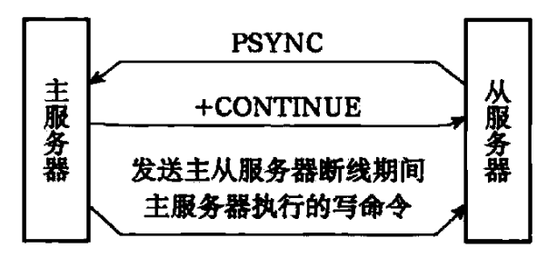
-
2.2.2 实现 #
2.2.2.1 部分重同步 #
- 部分重同步功能由以下三个部分组成：
- 主服务器的复制偏移量（Replication Offset）和从服务器的复制偏移量。
- 主服务器的复制积压缓冲区（Replication Backlog）。
- 服务器的运行 ID（Run ID）。
2.2.2.1.1 复制偏移量 #
- 执行复制的双方（主服务器和从服务器）会分别维护一个复制偏移量：
- 主服务器每次向从服务器传播 $N$ 个字节的同时，就将自己的复制偏移量的值加上 $N$。
- 从服务器每次收到主服务器传播来的 $N$ 个字节的数据时，就将自己的复制偏移量的值加上 $N$。
- 通过对比主从服务器的复制偏移量，程序可以很容易地知道主从服务器是否处于一致状态：
- 如果主从服务器处于一致状态，那么主从服务器两者的偏移量总是相同的。
- 相反，如果主从服务器两者的偏移量并不相同，那么说明主从服务器并未处于一致状态。
- 具体的实例如下：
-
假如开始时主从服务器的复制偏移量的值都是 10086。
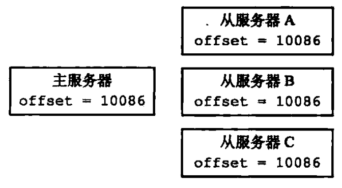
-
如果这时主服务器向三个从服务器传播长度为 33 字节的数据，那么主服务器的复制偏移量将更新为 10086 + 33 = 10119，而三个从服务器在接收到主服务器传播的数据之后，也会将复制偏移量更新为 10019。
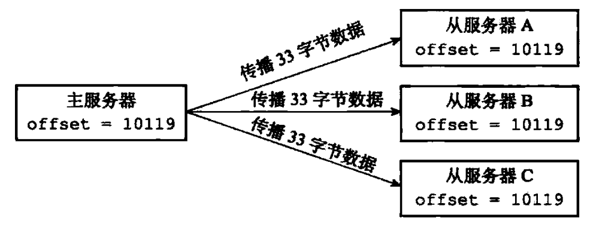
-
如果在主服务器向从服务器传播长度为 33 字节的数据之前，从服务器 A 断线了，那么主服务器传播的数据将只有从服务器 B 和从服务器 C 能收到，在这之后，主服务器、从服务器 B 和从服务器 C 三个服务器的复制偏移量都将更新为 10019，而断线的从服务器 A 的复制偏移量仍然停留在 10086，这说明从服务器 A 与主服务器并不一致。
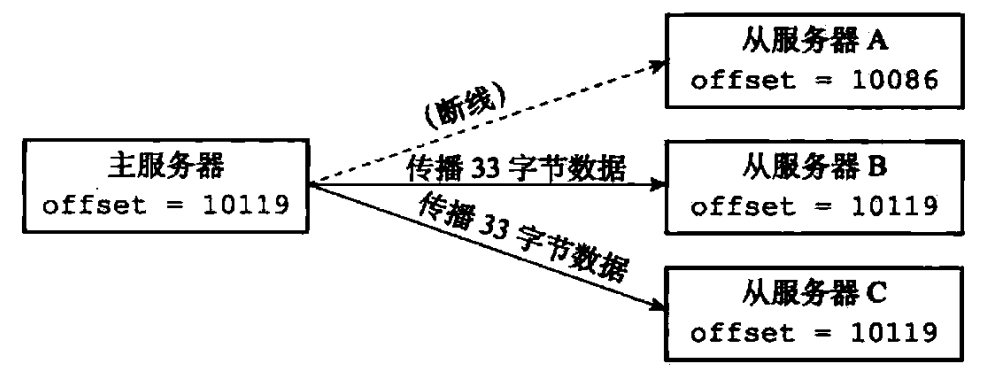
-
2.2.2.1.2 复制积压缓冲区 #
-
复制积压缓冲区是由主服务器维护的一个固定长度（Fixed Size）先进先出（FIFO）队列，默认大小为 1MB。
-
当主服务器进行命令传播时，他不仅会将写命令发送给所有从服务器，还会将写命令入队到复制积压缓冲区里面。
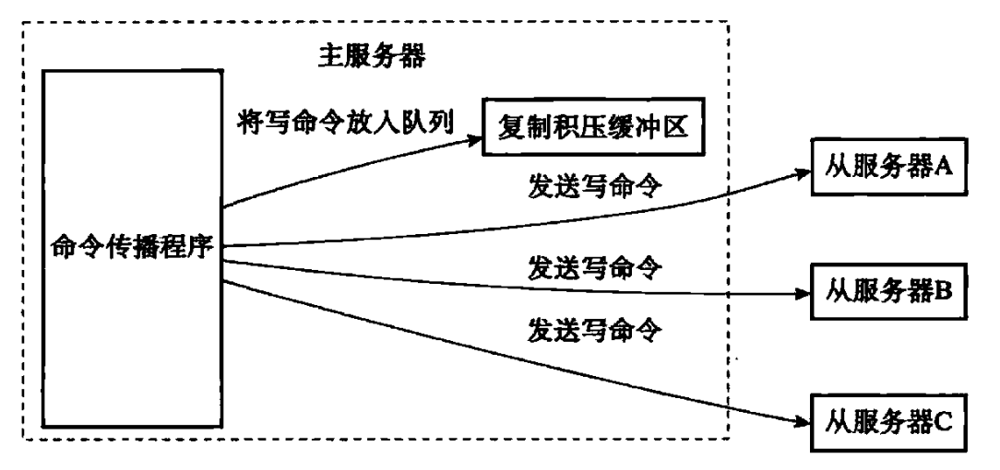
-
因此，主服务器的积压缓冲区里面会保存着一部分最近传播的写命令，并且复制积压缓冲区会为队列中的每个字节记录相应的复制偏移量。
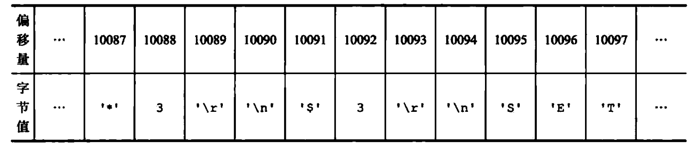
-
当从服务器重新连上主服务器时，从服务器会通过 PSYNC 命令将自己的复制偏移量
offset发送给主服务器，主服务器会根据这个复制偏移量来决定对从服务器执行何种同步操作：- 如果
offset偏移量之后的数据（也即是偏移量offset + 1开始的数据）仍然存在于复制积压缓冲区里面，那么主服务器将对从服务器执行部分重同步操作。 - 如果
offset偏移量之后的数据已经不存在与复制积压缓冲区，那么主服务器将对从服务器执行完整重同步操作。
- 如果
-
具体实例如下（以 2.2.2.1.1 复制偏移量中的实例为例）：
-
当服务器 A 断线之后，他立即重新连接主服务器，并向主服务器发送 PSYNC 命令，报告自己的复制偏移量为 10086。
-
主服务器收到从服务器发来的 PSYNC 命令以及偏移量 10086 之后，主服务器将检查偏移量 10086 之后的数据是否存在于复制积压缓冲区里面，结果发现这些数据仍然存在，于是主服务器向从服务器发送
+CONTINUE回复，表示数据同步将以部分重同步模式来进行。 -
接着主服务器会将复制积压缓冲区 10086 偏移量之后的所有数据（偏移量为 10087 至 10119）都会发送给从服务器。
-
从服务器只要接收这 33 字节的缺失数据，就可以回到与主服务器一致的状态。

-
2.2.2.1.3 服务器运行 ID #
- 除了复制偏移量和复制积压缓冲区之外，实现部分重同步还需要用到服务器运行 ID（runID）：
- 每个 Redis 服务器，无论是主服务器还是从服务器，都会有自己的运行 ID。
- 运行 ID 在服务器启动时自动生成，由 40 个随机的十六进制字符组成，例如
53b9b28df8042fdc9ab5e3fcbbbabff1d5dce2b3。
- 当从服务器断线并重新连上一个主服务器时，从服务器将向当前连接的主服务器发送之前保存的运行 ID：
- 如果从服务器保存的运行 ID 和当前连接的主服务器的运行 ID 相同，那么说明从服务器断线之前复制的就是当前连接的这个主服务器，主服务器可以继续尝试执行部分重同步操作。
- 相反地，如果从服务器保存的运行 ID 和当前连接的主服务器的运行 ID 并不相同，那么说明从服务器断线之前复制的主服务器并不是当前连接的这个主服务器，主服务器将对从服务器执行完整重同步操作。
- 具体的实例如下：
- 假设从服务器原本正在复制一个运行 ID 为
53b9b28df8042fdc9ab5e3fcbbbabff1d5dce2b3的主服务器。 - 那么在网络断开，从服务器重新连上主服务器之后，从服务器将向主服务器发送这个运行 ID。
- 主服务器根据自己的运行 ID 是否
53b9b28df8042fdc9ab5e3fcbbbabff1d5dce2b3来判断是执行部分重同步还是执行完整重同步。
- 假设从服务器原本正在复制一个运行 ID 为
2.2.2.2 PSYNC 命令 #
- PSYNC 命令的调用方法有两种：
- 如果从服务器以前没有复制过任何主服务器，或者之前执行过
SLAVEOF no one命令，那么从服务器在开始一次新的复制时将向主服务器发送PSYNC ? -1命令，主动请求主服务器进行完整重同步（因为这时不可能执行部分重同步）。 - 相反地，如果从服务器已经复制过某个主服务器，那么从服务器在开始一次新的复制时将向主服务器发送
PSYNC <runid> <offset>命令，其中runid是上一次复制的主服务器的运行 ID，而offset则是从服务器当前的复制偏移量，接收到这个命令的主服务器会通过这两个参数来判断应该对从服务器执行哪种同步操作。
- 如果从服务器以前没有复制过任何主服务器，或者之前执行过
- 根据情况，接收到 PSYNC 命令的主服务器会向从服务器返回以下三种回复的其中一种：
-
如果主服务器返回
+FULLRESYNC <runid> <offset>回复，那么表示主服务器将与从服务器执行完整重同步操作，其中runid是这个主服务器的运行 ID，从服务器会将这个 ID 保存起来，在下一次发送 PSYNC 命令时使用，而offset则是主服务器当前的复制偏移量，从服务器会将这个值作为自己的初始化偏移量。 -
如果主服务器返回
+CONTINUE回复，那么表示主服务器将与从服务器执行部分重同步操作，从服务器只要等着主服务器将自己缺少的那部分数据发送过来就可以了。 -
如果主服务器返回
-ERR回复，那么表示主服务器的版本低于 Redis 2.8，他识别不了 PSYNC 命令，从服务器将向主服务器发送 SYNC 命令，并与主服务器执行完整同步操作。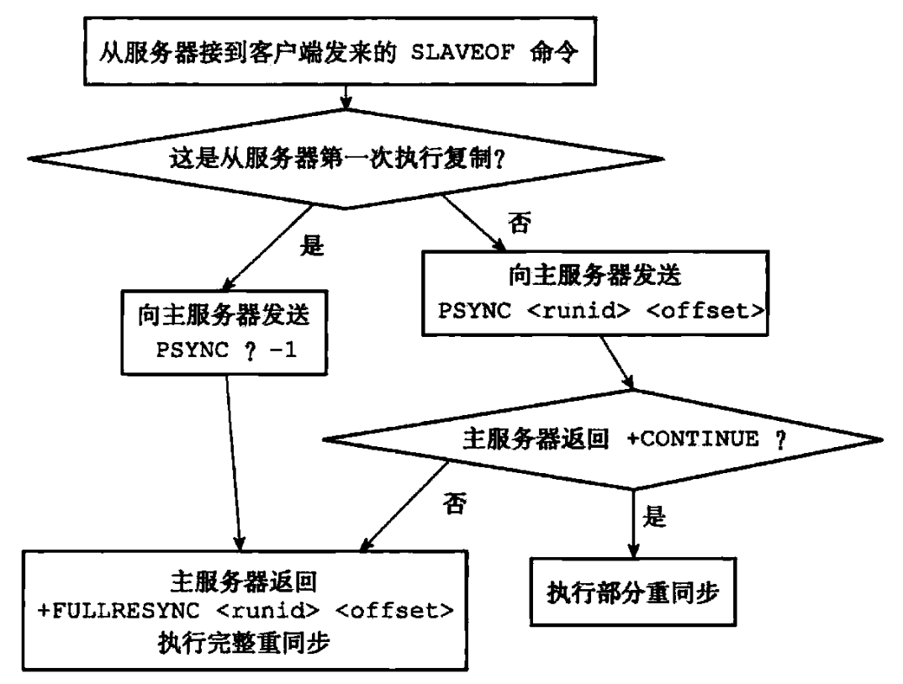
-
- 具体实例如下：
- 假设有两个 Redis 服务器，他们的版本都是 Redis 2.8，其中主服务器的地址为
127.0.0.1:6379，从服务器的地址为127.0.0.1:12345。 - 如果客户端向从服务器发送命令
SLAVEOF 127.0.0.1 6379，并且假设从服务器是第一次执行复制操作，那么从服务器将向主服务器发送PSYNC ? -1命令请求主服务器执行完整重同步操作。 - 主服务器在收到完整重同步请求之后，将在后台执行
BGSAVE命令，并向从服务器返回+FULLRESYNC 53b9b28df8042fdc9ab5e3fcbbbabff1d5dce2b3 10086回复，其中53b9b28df8042fdc9ab5e3fcbbbabff1d5dce2b3是主服务器的运行 ID，而10086则是主服务器当前的复制偏移量。 - 假设完整重同步成功执行，并且主从服务器在一段时间之后仍然保持一致，但是在复制偏移量为
20000的时候，主从服务器之间的网络连接中断了，这时从服务器将重新连接主服务器，并在此对主服务器进行复制。 - 因为之前曾经对主服务器进行过复制，所以从服务器将向主服务器发送命令
PSYNC 5 53b9b28df8042fdc9ab5e3fcbbbabff1d5dce2b3 20000，请求进行部分重同步。 - 主服务器在接收到从服务器的 PSYNC 命令之后，首先对比从服务器传来的
53b9b28df8042fdc9ab5e3fcbbbabff1d5dce2b3和主服务器自身的运行 ID，结果显示该 ID 和主服务器的运行 ID 相同，于是主服务器继续读取从服务器传来的偏移量20000，检查偏移量为20000之后的数据是否存在与复制积压缓冲区里面，结果发现数据仍然存在。 - 确认运行 ID 相同并且数据存在之后，主服务器将向从服务器返回
+CONTINUE回复，表示将与从服务器执行部分重同步操作，之后主服务器会将保存在复制积压缓冲区20000偏移量之后的所有数据发送给从服务器，主从服务器将再次回到一致状态。
- 假设有两个 Redis 服务器，他们的版本都是 Redis 2.8，其中主服务器的地址为
2.2.2.3 复制的实现 #
-
通过向从服务器发送 SLAVEOF 命令，我们可以让一个从服务器去复制一个主服务器，具体命令如下：
SLAVEOF <master_ip> <master_port> -
复制主要包括以下步骤：
- 设置主服务器的地址和端口。
- 建立套接字连接。
- 发送 PING 命令。
- 身份验证。
- 发送端口信息。
- 同步。
- 命令传播。
2.2.2.3.1 设置主服务器的地址和端口 #
-
当客户端向从服务器发送
SLAVEOF 127.0.0.1 6379时，从服务器首先要做的就是将客户端给定的主服务器 IP 地址127.0.0.1以及端口6379保存到服务器状态的masterhost属性和masterport属性里面。
-
SLAVEOF 命令是一个异步命令，在完成
masterhost属性和masterport属性的设置工作之后，从服务器将向发送SLAVEOF命令的客户端返回OK，表示复制指令已经被接收，而实际的复制工作将在OK返回之后才真正开始执行。
2.2.2.3.2 建立套接字连接 #
-
在 SLAVEOF 命令执行之后，从服务器将根据命令所设置的 IP 地址和端口，创建连向主服务器的套接字连接。

-
如果从服务器创建的套接字能成功连接到主服务器，那么从服务器将为这个套接字关联一个专门用于处理复制工作的 文件事件处理器，这个处理器将负责执行后续的复制工作，比如接收 RDB 文件，以及接收主服务器传播来的写命令。
-
而主服务器在接受从服务器的套接字连接之后，将为该套接字创建相应的客户端状态，并将从服务器看作是一个连接到主服务器的客户端来对待，这时从服务器将同时具有服务器和客户端两个身份，从服务器可以向主服务器发送命令请求，而主服务器则会向从服务器返回命令回复。
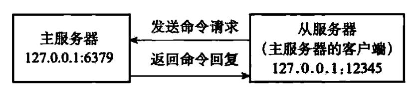
2.2.2.3.3 发送 PING 命令 #
- 从服务器成为主服务器的客户端之后，做的第一件事就是向主服务器发送一个 PING 命令，这个命令主要有两个作用：
-
虽然主从服务器成功建立起了套接字连接，但双方并为使用该套接字进行过任何通信，通过发送 PING 命令可以检查套接字的读写状态是否正常。
-
因为复制工作接下来的几个步骤都必须在主服务器可以正常处理命令请求的状态下才能进行，通过发送 PING 命令可以检查主服务器能否正常处理命令请求。
-
- 从服务器在发送 PING 命令之后将遇到以下三种情况的其中一种：
-
如果主服务器向从服务器返回了一个命令回复，但从服务器却不能在规定的时限内读取出命令回复的内容，那么表示主从服务器之间的网络连接状态不佳，不能继续执行复制工作的后续步骤。当出现这种情况时，从服务器断开并重新创建连向主服务器的套接字。
-
如果主服务器向从服务器返回一个错误，那么表示主服务器暂时没办法处理从服务器的命令请求，不能继续执行复制工作的后续步骤。当出现这种情况时，从服务器断开并重新创建连向主服务器的套接字。比如说，如果主服务器正在处理一个超时运行的脚本，那么当从服务器向主服务器发送 PING 命令时，从服务器将收到主服务器返回的
BUSY Redis busy running a script. You can only call SCRIPT KILL or SHUTDOWN NOSAVE.错误。 -
如果从服务器读取到 PONG 回复，那么表示主从服务器之间的网络连接状态正常，并且主服务器可以正常处理从服务器发送的命令请求，在这种情况下，从服务器可以继续复制工作的下个步骤。
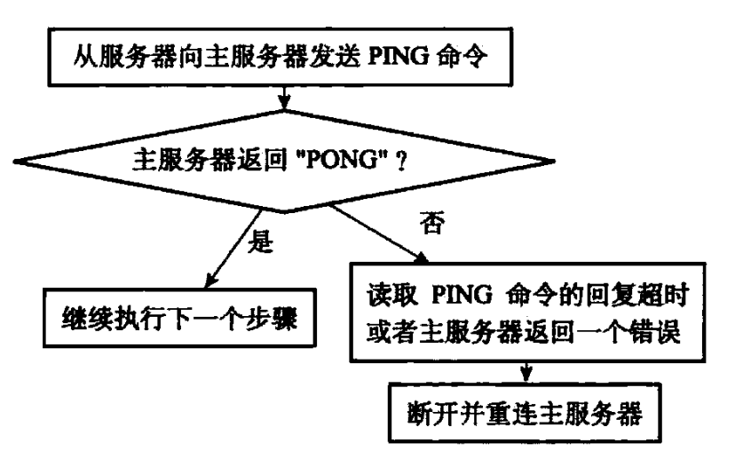
-
2.2.2.3.4 身份验证 #
-
从服务器在收到主服务器返回的 PONG 回复之后，下一步要做的就是决定是否进行身份验证：
- 如果从服务器设置了
masterauth选项，那么进行身份验证。 - 如果从服务器没有设置
masterauth选项，那么不进行身份验证。
- 如果从服务器设置了
-
在需要进行身份验证的情况下，从服务器将向主服务器发送一条 AUTH 命令，命令的参数为从服务器的
masterauth选项的值，例如从服务器的masterauth选项的值为10086，那么从服务器将向主服务器发送命令AUTH 10086。
-
从服务器在身份验证阶段可能遇到的情况有以下几种：
- 如果主服务器没有设置
requirepass选项，并且从服务器也没有设置masterauth选项，那么主服务器将继续执行从服务器发送的命令，复制工作可以继续进行。 - 如果从服务器通过 AUTH 命令发送的密码和主服务器
requirepass选项所设置的密码相同，那么主服务器将继续执行从服务器发送的命令，复制工作可以继续进行，与此相反，如果主从服务器设置的密码不相同，那么主服务器将返回一个invalid password错误。 - 如果主服务器设置了
requirepass选项，但从服务器却没有设置masterauth选项，那么主服务器将返回一个NOAUTH错误，另一方面，如果主服务器没有设置requirepass选项，但从服务器却设置了masterauth选项，那么主服务器将返回一个no password is set错误。
- 如果主服务器没有设置
-
所有错误情况都会令从服务器中止目前的复制工作，并从创建套接字开始重新执行复制，直到身份验证通过，或者从服务器放弃执行复制为止。

2.2.2.3.5 发送端口信息 #
-
在身份验证步骤之后，从服务器将执行命令
REPLCONF listening-port <port-number>，向主服务器发送从服务器的监听端口号，例如从服务器的监听端口号为 12345，那么从服务器将向主服务器发送命令REPLCONF listening-port 12345。 -
主服务器在接收到这个命令之后，会将端口号记录在从服务器所对应的客户端状态的
slave_listening_port属性中，该属性目前唯一的作用就是在主服务器执行INFO replication命令时打印出从服务器的端口号。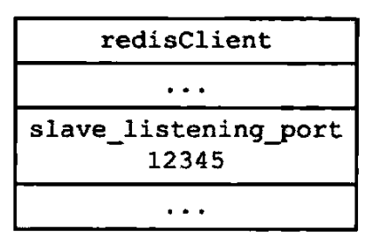
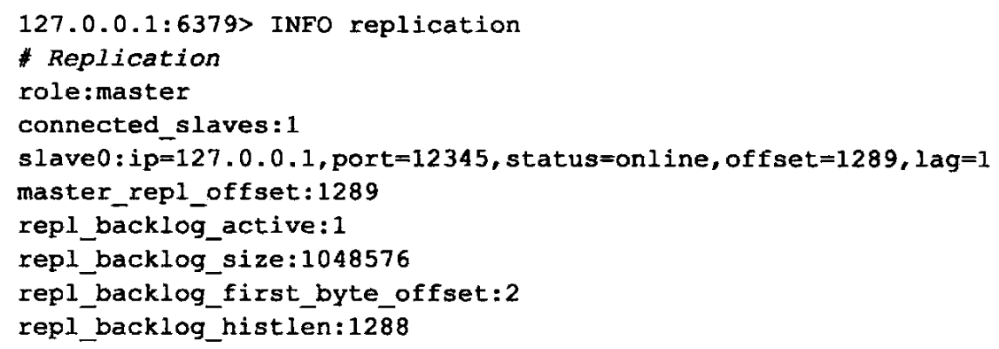
2.2.2.3.6 同步 #
-
在这一步，从服务器将向主服务器发送 PSYNC 命令，执行同步操作，并将自己的数据库更新至主服务器数据库当前所处的状态。
-
在同步操作执行之前，只有从服务器是主服务器的客户端，但是在执行同步操作之后，主服务器也会成为从服务器的客户端：
- 如果PSYNC 命令执行的是完整重同步操作，那么主服务器需要成为从服务器的客户端，才能将保存在缓冲区里面的写命令发送给从服务器执行。
- 如果PSYNC 命令执行的是部分重同步操作，那么主服务器需要成为从服务器的客户端，才能向从服务器发送保存在复制积压缓冲区里面的写命令。
-
因此，在同步操作执行之后，主从服务器双方都是对方的客户端，他们可以互相向对方发送命令请求，或者互相向对方返回命令回复。
-
正因为主服务器成为了从服务器的客户端，所以主服务器才可以通过发送写命令来改变从服务器的数据库状态，不仅同步操作需要用到这一点，这也是主服务器对从服务器执行命令传播操作的基础。
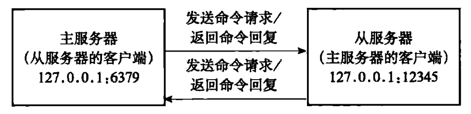
2.2.2.3.7 命令传播 #
- 当完成了同步之后，主从服务器就会进入命令传播阶段，这时主服务器只要一直将自己执行的写命令发送给从服务器，而从服务器只要一直接收并执行主服务器发来的写命令，就可以保证主从服务器一直保持一致了。
2.2.2.4 心跳检测 #
-
在** 命令传播阶段**，**从服务器默认会以每秒一次的频率**，**向主服务器发送以下命令**：
REPLCONF ACK <replication_offset>其中
replication_offset是从服务器当前的复制偏移量。 -
发送
REPLCONF ACK命令对于主从服务器有三个作用：- 检测主从服务器的网络连接状态。
- 辅助实现
min-slaves选项。 - 检测命令丢失。
2.2.2.4.1 检测主从服务器的网络连接状态 #
-
主从服务器可以通过发送和接收
REPLCONF ACK命令来检查两者之间的网络连接是否正常，如果主服务器超过一秒钟没有收到从服务器发来的REPLCONF ACK命令，那么主服务器就知道主从服务器之间的连接出现问题了。 -
通过向主服务器发送
INFO replication命令，在列出的从服务器列表的lat一栏中，我们可以看到相应从服务器最后一次向主服务器发送REPLCONF ACK命令距离现在过了多少秒：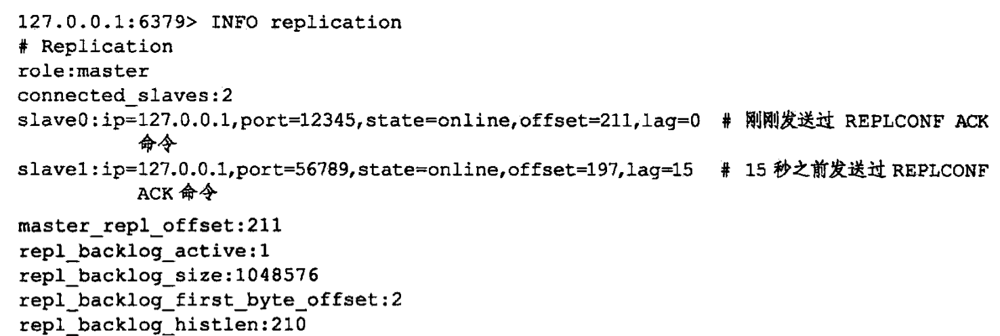
-
在一般情况下，
lat的值应该在 0 秒或者 1 秒之间跳动，如果超过 1 秒的话，那么说明主从服务器之间的连接出现了故障。
2.2.2.4.2 辅助实现 min-slaves 配置选项 #
- Redis 的
min-slaves-to-write和min-slaves-max-lang两个选项可以防止主服务器在不安全的情况下执行写命令：-
例如我们向主服务器提供以下配置：
min-slaves-to-write 3 min-slaves-max-lang 10 -
那么在从服务器的数量少于 3 个，或者三个从服务器的延迟值都大于或等于 10 秒时，主服务器将拒绝执行写命令，这里的延迟值就是上面提到的
INFO replication命令的lang值。
-
2.2.2.4.3 检测命令丢失 #
- 如果因为网络故障，主服务器传输给从服务器的写命令在半路丢失，那么当从服务器向主服务器发送
REPLCONF ACK命令时，主服务器将发觉从服务器当前的复制偏移量少于自己的复制偏移量，然后主服务器就会根据从服务器提交的复制偏移量，在复制积压缓冲区里面找到从服务器缺少的数据，并将这些数据重新发送给从服务器。 - 需要注意的是，主服务器向从服务器补发缺失数据这一操作的原理和部分重同步操作的原理非常相似，这两个操作的区别在于，补发缺失数据操作在主从服务器没有断线的情况下执行，而部分重同步操作则在主从服务器断线并重连之后执行。
- 具体实例如下：
-
假设有两个处于一致状态的主从服务器，他们的复制偏移量都是 200。

-
如果这时主服务器执行了命令
SET key value（协议格式的长度为 33 字节），将自己的复制偏移量更新到了 233，并尝试向从服务器传播命令SET key value，但这条命令却因为网络故障而在传播的途中丢失，那么主从服务器之间的复制偏移量就会出现不一致，主服务器的复制偏移量会被更新为 233，而从服务器的复制偏移量仍然为 200。
-
在这之后，当从服务器向主服务器发送
REPLCONF ACK命令的时候，主服务器会察觉从服务器的复制偏移量依然为 200，而自己的复制偏移量为 233，这说明复制积压缓冲区里面复制偏移量为 201 至 233 的数据（也即是命令SET key value）在传播过程中丢失了，于是主服务器会再次向从服务器传播命令SET key value，从服务器通过接收并执行这个命令可以将自己更新至主服务器当前所处的状态。
-
参考文献 #
- Redis 进阶 - 高可用：主从复制详解。
- redis 设计与实现（第二版）。